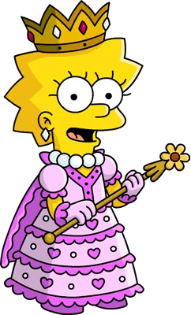

Simpson family

The Simpsons (often shortened to Simpsons)
is an American animated sitcom
created
by Matt
Groening for the Fox
Broadcasting Company. The main characters are a satire of a working-class family, consisting of Homer,
Marge,
Bart,
Lisa, and Maggie. The series lampoons many aspects of American culture, society, politics, and history.
Homer

Homer Jay Simpson (born May 12, 1951) is the main protagonist of The Simpsons series (or show). He is the spouse of Marge Simpson and father of Bart, Lisa and Maggie Simpson. Homer is overweight (said to be ~240 pounds), lazy, and often ignorant to the world around him. Although Homer has many flaws, he has shown to have great caring, love, and even bravery to those he cares about and, sometimes, even others he doesn't. He also serves as the main protagonist of the The Simpsons Movie. He is 39 years old and was born in 1951.
- “Woo-hoo!”
- “Better them than me... Oh wait, that was me.”
- “AAAAGHH!”
Bart

Bartholomew JoJo "Bart" Simpson (born April 1 or February 23) is the Deuteragonist of The Simpsons. Even at a young age, Bart has accomplished many feats. He has won an award for his Angry Dad web series, he has discovered a new comet which was named after him, and he also has performed in a successful band with Milhouse Van Houten, Nelson Muntz, and Ralph Wiggum.
- “Ay Caramba!”
- “Eat my shorts!”
Lisa
Lisa Marie Simpson (born May 9) is the elder daughter and middle child of the Simpson family and one of the two tritagonists (along with Marge,) of The Simpsons series. She is a charismatic 8-year-old girl, who exceeds the standard achievement of the intelligence level of children her age. Not to everyone's surprise, she is also the moral center of her family. In her upbringing, Lisa lacks parental involvement of Homer and Marge, which leads to hobbies such as playing saxophone and guitar, riding and caring for horses, and interest in advanced studies. In school, Lisa's popularity is affected by those who view her as a geeky overachiever, which leaves her with only a few friends.
- “The truth must be told.”
- “I hope these are recyclable.”
- “If anyone wants me, I'll be in my room.”